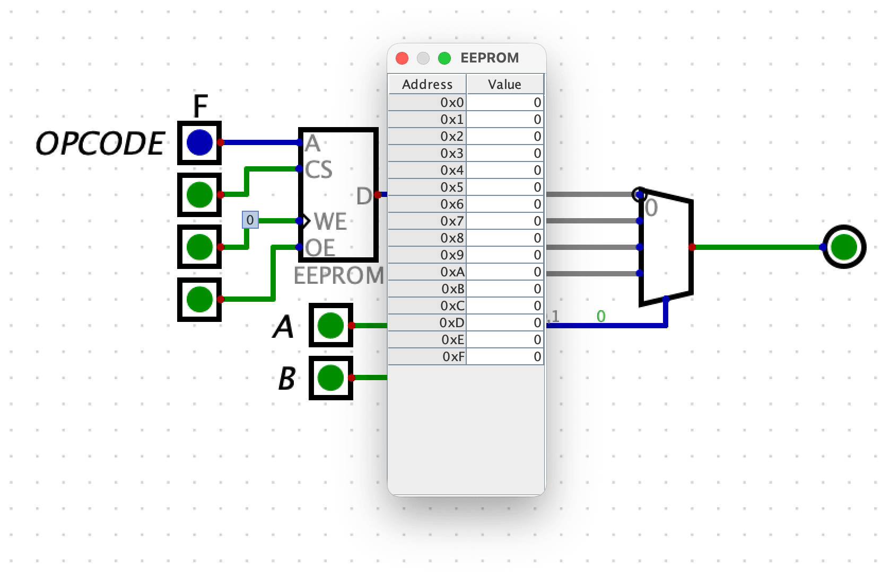

Dispatch · Architecture
If LUT2 costs four chips, build the second LUT3.
Masked invert was naïve. A true dual 4:1 mux is hard to find in 74xx. Two extra chips versus invert buys the whole LUT3 plane.
Area and available hardware imply that designs which offer more for less are favourable — unlike conventional parasitic and wiring-budget metrics. The ALU moved from adder(mux(a,b,c), masked invert(b), carry-in) into adder(mux(a,b,c), mux(a,b,c), h(carry-in)).
The earlier g(b) unit took two opcodes and produced four states, all useful. Forced 0 lets the adder do f + 0 — logic mode. The cost was two chips per 4-bit cell: a quad XOR as global inverter and a quad NAND. Why not replace the naïve masked invert with a single 74151?
An 8:1 mux wants an 8-bit truth table. A dual 4:1 looked like a perfect substitute with no catch — except 74153 shares select lines, so it is not a true dual. Four chips for LUT2, and the second mux inside the package sits dark. If four chips are needed for LUT2, build a second LUT3. Two extra chips versus invert. Identical chip count versus LUT2. Astronomical operational space.

Fig. — LUT2 from muxesIf four chips buy LUT2, buy a second LUT3
I need to acknowledge redundancies in the maximum sample space. and(a,b,c) + xnor(a,b,c) is the same sum the other way around. Future progress will clarify the unique operational space and eliminate Boolean noise.